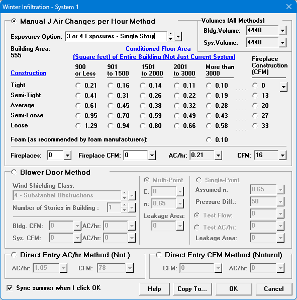

Infiltration (System Data Window) |
  
|
Infiltration (System Data Window) |
|
Infiltration, Winter and Summer: Infiltration is caused by air "leaking" into the building through gaps in the envelope. All buildings have some infiltration. The Winter Infiltration or Summer Infiltration dialog will open when you click the dropdown help button to the right of the input, which will let you select a recommended rate of infiltration based on the construction tightness and floor area of the building.
If you enter an air change per hour value, Rhvac will multiply that value by the total volume of the structure and divide the result by 60 to determine the total infiltration CFM. Reducing the air changes per hour value will reduce the load on the structure due to infiltration. Also note that if you enter a CFM value the program will show the corresponding air changes per hour value on the Miscellaneous Data report.
Click the button beside the Infiltration (Summer or Winter) input on the System Data window to open the dialog below. The winter one is shown below.
Adjustment due to Ventilation and Exhaust
When you enter ventilation and/or exhaust, the program's calculations may adjust the rate of infiltration to be more or less than the value you entered. See the Infiltration Adjustment topic for details.
Manual J Air Changes per Hour Method
Select this option if you want to use Manual J's suggested air changes per hour table values. First select the appropriate Exposures Option. Then select the air changes per hour option that best fits your building construction tightness and above grade floor area of the entire building. It is important that you realize that the conditioned floor area you should use to select an option is the area of the whole building, not just the current system. That's because it's the envelope of the building that determines how much infiltration air will be coming in, regardless of the internal boundaries of any systems occurring within the building. For the winter, after selecting the appropriate option then select the fireplace construction and number of fireplaces. The CFM for the fireplace will be added at calculation time in addition to the air changes per hour value.
For descriptions of the construction options of Tight, Semi-Tight, etc., see the Construction Tightness topic.

Volumes (All Methods): Shows the building volume and the calculated volume of the current system. The volume of the building is based on the Building Volume Option on the General Project Data window.
Construction Options, Tight, Semi-Tight, Average, Semi-Loose, Loose: Determines the air changes per hour rate to use for infiltration for the current system. See the Construction Tightness topic for descriptions of each level. For the Conditioned Floor Area column, use the above grade square footage of the building.
Fireplace Construction: Specifies the CFM due to infiltration corresponding to one of the construction tightness levels on the left side of this dialog, under the word, "Construction." See the Construction Tightness topic for descriptions of each level.
Number of Fireplaces: Enter the number of fireplaces that occur in the current system only (NOT for the whole building). Each fireplace in the system will add a certain amount of infiltration in the winter (not the summer, since Manual J assumes that fireplaces only increase infiltration while there is actually a fire going in the fireplace). Note that this input adds an additional CFM amount rather than affecting the air changes per hour value you enter.
Also notice from the list in the dropdown help for this input that for multiple fireplaces the CFM added is not supposed to be simply a multiple of that for a single fireplace. For one fireplace, the CFM value shown under the Fireplace Construction option will be used. For two fireplaces, 7 CFM will be added to that value. For three or more fireplaces, a total of 10 CFM will be added to it.
Fireplace CFM (added to AC/hr): This value is filled in automatically for you when you select the fireplace construction and the number of fireplaces. You can enter your own value here also. The CFM shown here will be added to the air changes per hour value during calculations.
Notice that when there are multiple fireplaces the amount shown here is not supposed to be simply a multiple of the amount shown underneath Fireplace Construction (see the dropdown help for the Fireplaces input on the left for more information).
AC/hr: Displays the air changes per hour of infiltration to use for this system. Is set according to the options you selected in the inputs above.
CFM: This box shows the current CFM that corresponds to the air changes per hour value selected, plus any fireplace CFM showing in the "Fireplace CFM" input. The value shown here is based on the current volume of the rooms you have entered for the current system, so it is only accurate if you have already entered the rooms for the current system.
Blower Door Method
Select this option only if you have performed a blower door test on the house and the blower door equipment does not give you a steady state (non-pressurized) infiltration rate. If the blower door equipment gives you a CFM or air changes per hour result for the house when not being put under pressure, then instead of selecting "Blower Door Method" select either "Direct Entry CFM" or "Direct Entry AC/Hr." Also, only select this option if the blower door apparatus software provides you with the data you need to enter into the inputs described below under "Multi-Point" or "Single-Point."
Note: The blower door calculation result shown in the Bldg. CFM and Bldg. AC/hr inputs are for the whole house. For a multi-system project this result for the building is proportioned out to the current system based on the ratio of the system volume to the whole building volume, and is shown in the Sys. CFM and Sys. AC/hr inputs. So normally for most projects (where no system has its System Is Isolated input set to Yes) you should be sure that the blower door information entered is the same for each of your systems. If you have already created more than one system in the house, be sure to use the "Copy To..." button at the bottom of the infiltration window to copy your blower door inputs to each of the other systems.
Wind Shielding Class: Specifies the wind shielding class from Manual J's Table 5D, on page 177. The higher the wind shielding class, the lower the infiltration.
Number of Stories in Building: Specifies the total number of stories in the building (not just the current system). This input sets the value called the Stack Coefficient from Manual J's table 5D, page 177. The more stories, the higher the infiltration.
Bldg. CFM, Sys. CFM: These boxes show the calculated CFM of infiltration for the current blower door input selections.
Bld. AC/hr, Sys. AC/hr: These boxes shows the current air changes per hour value that corresponds to the current blower door infiltration CFM. The values shown here are based on the current volume of the rooms you have entered for the current system as well as the Building Volume Option on the General Project Data window, and they are only accurate if you have already entered the rooms for the current system. If you later enter more rooms or otherwise change the building's volume the reports will appropriately reflect your latest changes.
Note: It is normal for building and system CFM and AC/hr results for winter and summer to be different when using the exact same blower door input values. The reason for the difference is that blower door formulas assume different wind speed and design temperature difference values for winter and summer.
Multi-Point or Single-Point Option: Specifies which kind of blower door test data you want to use.
Multi-Point
C: This "C" parameter for a multi-point blower test is provided by the software that is packaged with the blower door apparatus. It is used in combination with the flow exponent "n" parameter in the calculation of the effective leakage area.
n: This flow exponent "n" parameter for a multi-point blower test is provided by the software that is packaged with the blower door apparatus. It is used in combination with the "C" parameter in the calculation of the effective leakage area.
Leakage Area: This box shows the calculated effective leakage area in sq. in. when using multi-point test data. The effective leakage area is used to calculate the infiltration CFM.
Single-Point
Assumed n: Specifies the flow exponent used in the single-point calculation. When using single-point blower test results, the value of the flow exponent "n" parameter is usually assumed to be 0.65. If you want to use a different value for the "n" parameter enter it here. The value here will be used along with the pressure difference and flow you enter to calculate the effective leakage area. Then from the effective leakage area the infiltration CFM will be calculated.
Pressure Diff: Specifies the pressure difference used for the blower door test single-point data, in Pascals (Pa). The value you enter here will be used along with the test flow and flow exponent "n" you enter to calculate the effective leakage area. Then from the effective leakage area the infiltration CFM will be calculated.
Test Flow: Specifies the airflow used for the blower door test single-point data, in CFM. The value you enter here will be used along with the flow exponent "n" and test pressure difference you enter to calculate the effective leakage area. Then from the effective leakage area the infiltration CFM will be calculated.
Leakage Area: Specifies the effective leakage area in square inches used to calculate the infiltration CFM. The effective leakage area is normally calculated for you when you enter the other inputs, described above. But if you would like to enter a certain effective leakage area in order to let the program back calculate a test CFM value and put it in the Test Flow input you may enter it here.
Direct Entry AC/hr Method
This option is appropriate to select when you want to enter a particular air change per hour value that does not necessarily correspond to an option in the "Manual J Air Changes Per Hour" table of options, or when you have done a blower door test and the blower door equipment has provided you with an air changes per hour infiltration value for the house's non-pressurized state.
AC/hr: Specifies an air changes per hour value of infiltration that you enter directly. The value you should enter here is for the natural, non-pressurized state. The program will calculate a CFM of infiltration based on the value you enter here. The largest value you can enter here is 10 air changes per hour.
CFM: This box shows the current CFM value that corresponds to the current direct entry air changes per hour. The value shown here is based on the current volume of the rooms you have entered for the current system, so it is only accurate if you have already entered the rooms for the current system.
Direct Entry CFM Method
This option is appropriate to select when you want to enter a certain CFM value, such as when you have done a blower door test and the blower door equipment has provided you with an infiltration CFM value for the house's non-pressurized state.
CFM: Specifies a CFM value of infiltration that you enter directly. The value you should enter here is for the natural, non-pressurized state.
AC/hr: This box shows the current air changes per hour value that corresponds to the current direct entry CFM. The value shown here is based on the current volume of the rooms you have entered for the current system, so it is only accurate if you have already entered the rooms for the current system.
Other
Sync all winter and summer options upon clicking OK: When checked, applies all of the options you have entered on the Winter Infiltration dialog to the Summer Infiltration dialog, or vice-versa. If you have selected the "Manual J Air Changes per Hour" method the same building area and construction tightness will be used on the other dialog, but the air changes per hour value will be different, since the table values for winter and summer are different. Unlike all of the other inputs on these dialogs, the state of this checkbox (checked or not) is saved globally for all projects for the current user, rather than in the current project file. So whenever you open this dialog this checkbox remembers its previous state.
Help: Opens the F1 help to this topic.
Copy To... Button: Copies the current settings on this dialog to all other systems.
OK Button: Saves the changes you made and closes this dialog.
Cancel Button: Closes this dialog without making any changes.